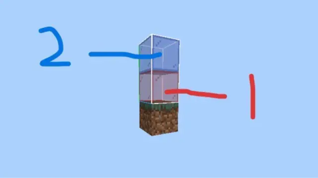
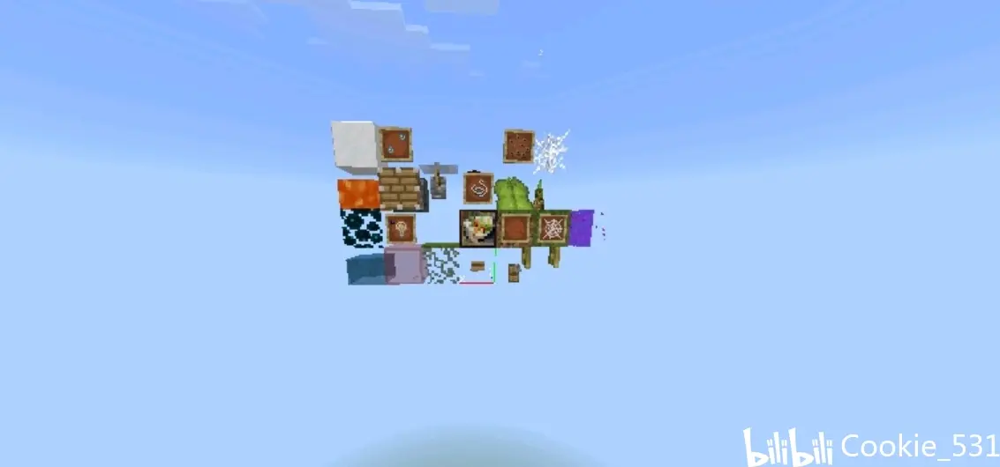

本专栏意在进一步完善与补充劫掠中“尝试”的第一次生成与散布生成的机制，基本理论框架由@藏青茶壶 茶壶大爷，以及某只變異兔子帮忙去最新版本测得了四个新方块的性质.
劫掠第一次选点分为六种方式，详细内容自行查阅（一定不是我懒得去写和配图）。
可可豆（1-3） 原木 告示牌 活板门（all朝向）床（2格都是） 重生锚 篝火（4种）半砖/台阶（all） 楼梯（all） 兩種火（1.21-）細雪（1.21-） 有碰撞体积的顶层雪 标靶 干草垛 拼图方块 结构方块 命令方块（3种） 门 折越门 末地传送门 竹子（生长后状态） 栅栏 墙 边界（非其延伸类） 杜鹃花（2种） 屏障 隐形基岩 更新方块（除了火把状都可） 化学元素方块 紫松果/花 蜜块 蜂箱 蜂巢 粘液方块 红树根 荷叶 龙蛋 海龟蛋 灯笼（2种）蠟燭 潮湧核心 没“阳痿”的垂滴叶 垂根 混凝土 混凝土粉末 梯子 玻璃板 玻璃 遮光玻璃 關閉的柵欄門 染色玻璃 石砖等 虫蛀砖 工作可交互方块 合成器 发射器 活塞（2 （2 石头 苔藓 苔藓层 地毯（16 木板 按钮（1.11-1.14）.仙人掌 箱子 盒子 嘎枝核心 泥巴 靈魂沙/土 下界猶塊/詭異猶塊 铁栏杆 铁链 蘑菇块 紫水晶 紫水晶尖 懸掛告示牌 （all） 鐘 紅石中繼器 紅石比較器 ？方塊 潛影盒及其伸長 豬籠草 活塞臂（1.21後）

幽匿脈絡 新版本樹脂 地衣 紅石 樹葉（不含菌类“叶子”） 水 水流 岩漿 岩漿流 厥 花 線 按鈕（1.14以上） 結構空位 空氣 光源方塊（1-15） 腳手架 蜘蛛網 纏怨藤 垂淚藤 小的珊瑚/珊瑚扇 垂下的垂滴叶 未生長狀態下竹子 小麥 胡蘿蔔 漿果 馬林薯 甜菜 南瓜藤 西瓜藤 甘蔗 展示框（2種）下界猶 打開的柵欄門 拉杆 气泡柱 mb分离出的碰撞箱（mb本身不在范围内 ） 数据更新方块（火把状） 含水线 蘑菇 画（实体） 照相机（实体） 旗幟（上下） 扳線鉤 壓力板（all） 火把（all） 紅石 鐵軌（all）活塞臂（1.21-）潛影貝 普通告示牌 細雪（1.21後） 兩種火（1.21後）
而知曉了方塊類型後，我們便可以將其帶入到「檢測」中了.
檢測範圍示意圖（以底為始，整1x*2y*1z）